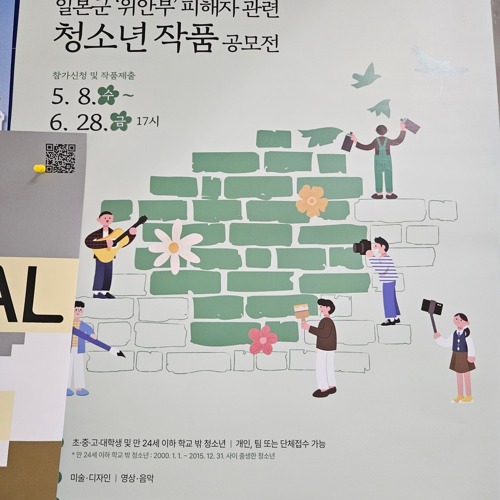
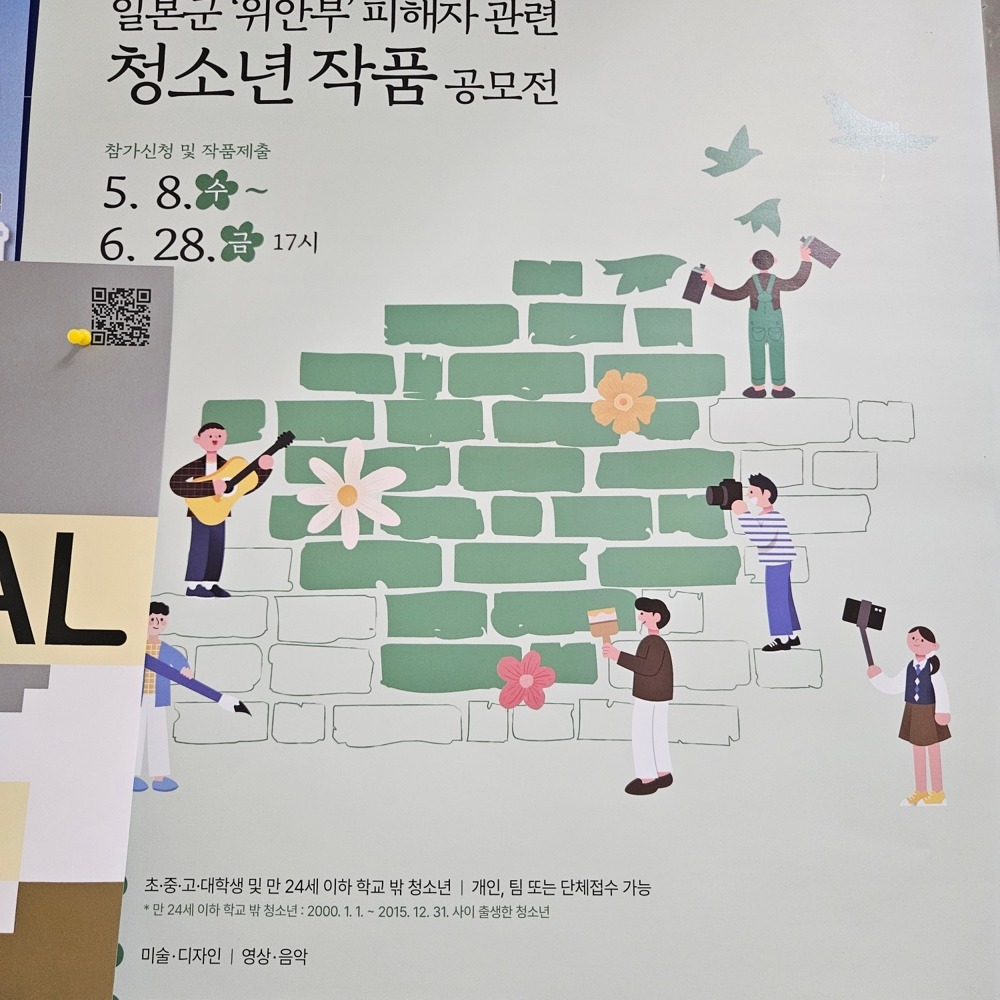

성별과 관한 고정관념들이 광고홍보물이나 예방 방법 등의 그림들에서 자주 본다. 성별에 따른 특정한 역할을 하는 모습을 그리고 하나의 성만 등장한다.


양옆과 밑에 사진에는 긴급 대피사항 관련 안내문에 구조를 주도하는 사람은 남성, 보호받거나 위험한 상황에 놓인 사람은 여성 또는 노약자이다. 홍보물에서 남성이 여성보다 많은 비율을 차지한다. 영웅을 주제로 하는 초록우산 광고 홍보물에서 휠체어를 타고 있는 여성 노약자, 휠체어를 이끄는 사람은 남성이다. 또한, 남성과 여성을 나타내는 색을 여성은 빨강과 분홍, 남성은 초록과 파랑으로 구분해놓았다. 천하장사 포장지에 남성 천하장사를 그렸다.


 
